整理常用网络协议OSI七层协议，TCP-IP协议组，UDP，Socket，WebSocket，Http，Https，三次握手，长连接
Web开发常用协议
OSI七层协议体系
OSI 模型(Open System Interconnection model)：是一个由国际标准化组织提出的概念模型,试图提供一个各种不同的计算机和网络在世界范围内实现互联的标准框架。它将计算机网络体系结构划分为七层，每层都可以提供抽象良好的接口。
OSI 模型各层间关系和通讯时的数据流向如图所示：
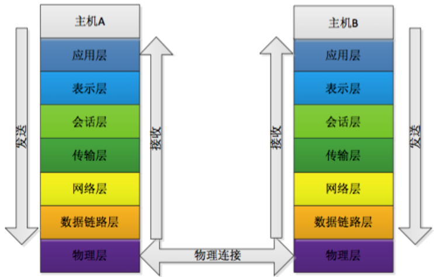
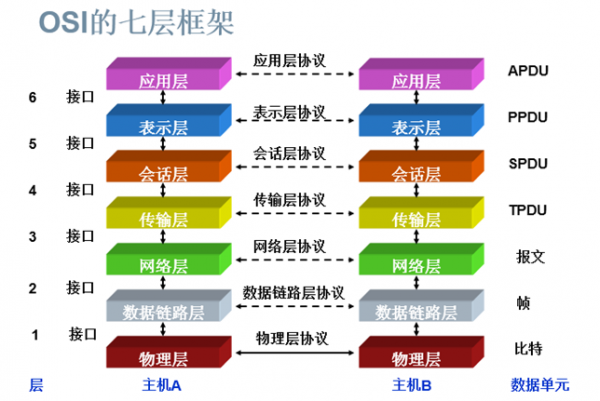
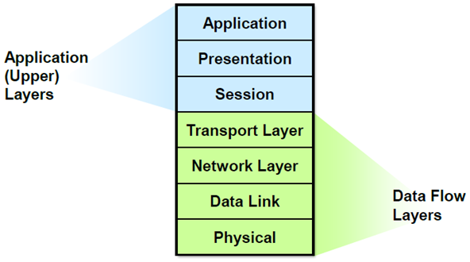
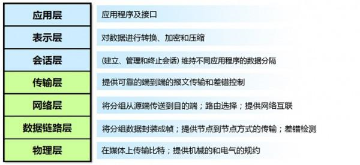
特点：
1.OSI模型每层都有自己的功能集；
2.层与层之间相互独立又相互依靠；
3.上层依赖于下层，下层为上层提供服务。
了解 OSI 模型有助于理解实际上互联网络的工业标准-TCP/IP 协议。
物理层 Physical
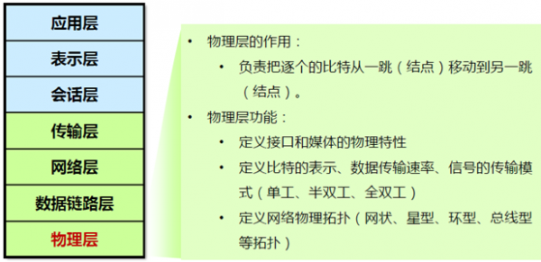
设备：Hub集线器
- 整台设备在同一个冲突域 (collision domain)
- 整台设备都在同一个广播域( broadcast domain)
- 设备共享带宽
WAN、LAN的物理层实现
- 物理层标准规定了信号、连接器和电缆要求。
- 接口及连接器、线缆
物理拓扑：物理层负责最后将信息编码成电流脉冲或其它信号用于网上传输；
- 功能：
eg：RJ45等将数据转化成0和1；
数据链路层 DataLink
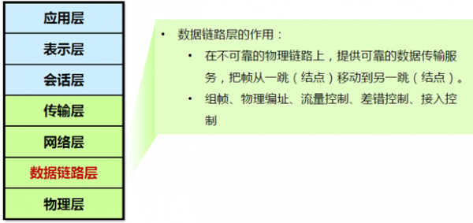
设备：交换机
- 每个端口是一个冲突域
- 整台交换机属于一个广播域【一个网段(vlan)就是一个广播域】
- 全双工
- 工作原理：根据MAC地址表转发数据帧，如果地址未知，则广播
成帧：数据链路层通过物理网络链路提供数据传输。
- 功能：
不同的数据链路层定义了不同的网络和协议特征，其中包括物理编址、网络拓扑结构、错误校验、数据帧序列以及流控；可以简单的理解为：规定了0和1的分包形式，确定了网络数据包的形式；网络层 Network
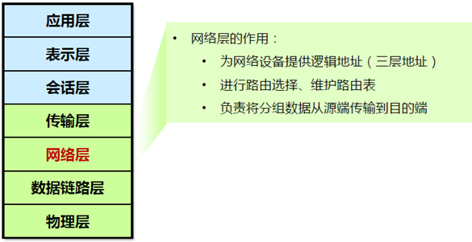
路由选择：网络层负责在源和终点之间建立连接;
可以理解为，此处需要确定计算机的位置，怎么确定？IPv4，IPv6！设备：路由器（Router）
- 广播、组播隔绝
- 寻址及转发，选择到达目的网络的最佳路径
- 流量管理
- 连接广域网(WAN)
设备：网桥
- 数据链路层包含：MAC及LLC子层
- 逻辑地址：MAC地址
- 以太网工作在数据链路层（我们平常使用的局域网就是以太网）
- 以太网标准：Ethernet-II 及802.3
传输层 Transportation
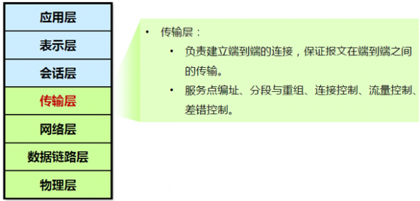
传输层向高层提供可靠的端到端的网络数据流服务。
- 功能：将数据进行分段并重组为数据流。位于传输层的服务将来自上层应用的数据进行分段和重组，并将他们合并到一个数据流中。他们提供了端到端的数据传输服务，并可在互联网上的发送主机和目标主机之间建立逻辑连接。
流量控制
数据的完整性由传输层确保。流量控制可避免作为发送方的主机让作为接收方的主机的缓冲区溢出。
对上层应用程序进行
多路复用，建立会话以及拆除虚电路。可以理解为：每一个应用程序都会在网卡注册一个端口号，该层就是端口与端口的通信！
会话层 Session
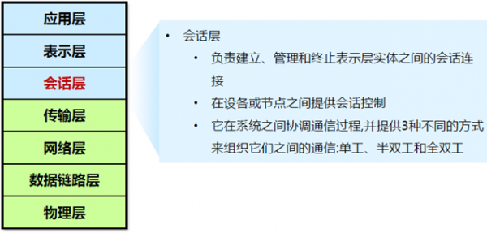
- 功能：负责
在表示层实体之间建立、管理和终止会话。还对设备或节点之间的对话进行控制。协调和组织系统之间的通信。
3种不同的模式：单工、半双工、全双工。会话层的功能将不同应用程序的数据分离表示层 Presentation
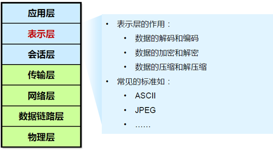
表示层提供多种功能用于应用层数据编码和转化,以确保以一个系统应用层发送的信息可以被另一个系统应用层识别； - 功能：用户和计算机交流的场所，负责确定目标通信方的可用性，并判断是否有足够的资源进行想要的通信。
常见的应用层协议：
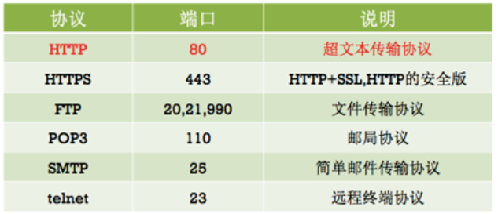
互联网分层结构的好处: 上层的变动完全不影响下层的结构。
TCP/IP协议组
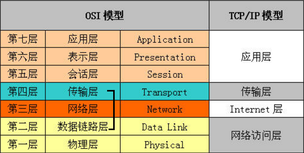
IP（
Internet Protocol，网络之间互连的协议 ）在因特网中，它是能使连接到网上的所有计算机网络实现相互通信的一套规则，规定了计算机在因特网上进行通信时应当遵守的规则。任何厂家生产的计算机系统，只要遵守IP协议就可以与因特网互连互通。TCP（
Transmission Control Protocol传输控制协议）是一种面向连接的、可靠的、基于字节流的传输层通信协议，由IETF的RFC 793定义。在简化的计算机网络OSI模型中，它完成第四层传输层所指定的功能。
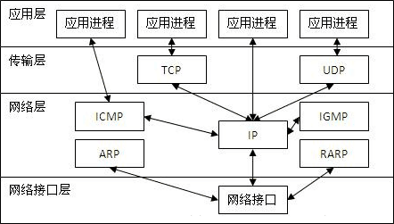
我们在学习网络知识的时候，都是参照OSI模型的，但在使用的时候，都是使用TCP/IP模型。
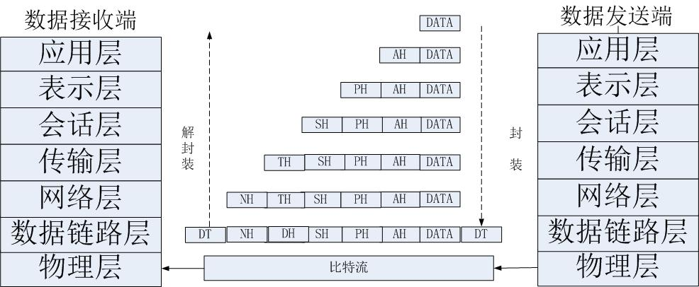
- TCP工作在网络OSI的七层模型中的第四层——Transport层，第四层的数据叫Segment。
- IP在第三层——Network层，在第三层上的数据叫Packet，
- ARP在第二层——Data Link层；在第二层上的数据，我们把它叫Frame，
数据从应用层发下来，会在每一层都会加上头部信息，进行封装，然后再发送到数据接收端。每个数据都会经过数据的封装和解封装的过程。
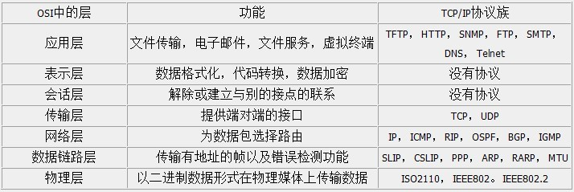
TCP协议头部格式
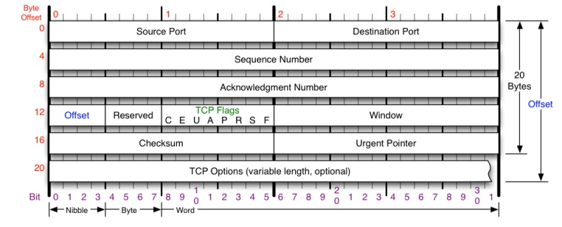
Source Port和Destination Port:分别占用16位，表示源端口号和目的端口号；用于区别主机中的不同进程，而IP地址是用来区分不同的主机的，源端口号和目的端口号配合上IP首部中的源IP地址和目的IP地址就能唯一的确定一个TCP连接；Sequence Number:用来标识从TCP发端向TCP收端发送的数据字节流，它表示在这个报文段中的的第一个数据字节在数据流中的序号；主要用来解决网络报乱序的问题；Acknowledgment Number:32位确认序列号包含发送确认的一端所期望收到的下一个序号，因此，确认序号应当是上次已成功收到数据字节序号加1。不过，只有当标志位中的ACK标志（下面介绍）为1时该确认序列号的字段才有效。主要用来解决不丢包的问题；Offset:给出首部中32 bit字的数目，需要这个值是因为任选字段的长度是可变的。这个字段占4bit（最多能表示15个32bit的的字，即4*15=60个字节的首部长度），因此TCP最多有60字节的首部。然而，没有任选字段，正常的长度是20字节；TCP Flags:TCP首部中有6个标志比特，它们中的多个可同时被设置为1，主要是用于操控TCP的状态机的，依次为URG，ACK，PSH，RST，SYN，FIN。每个标志位的意思如下：URG：此标志表示TCP包的紧急指针域（后面马上就要说到）有效，用来保证TCP连接不被中断，并且督促中间层设备要尽快处理这些数据；ACK：此标志表示应答域有效，就是说前面所说的TCP应答号将会包含在TCP数据包中；有两个取值：0和1，为1的时候表示应答域有效，反之为0；PSH：这个标志位表示Push操作。所谓Push操作就是指在数据包到达接收端以后，立即传送给应用程序，而不是在缓冲区中排队；RST：这个标志表示连接复位请求。用来复位那些产生错误的连接，也被用来拒绝错误和非法的数据包；SYN：表示同步序号，用来建立连接。SYN标志位和ACK标志位搭配使用，当连接请求的时候，SYN=1，ACK=0；连接被响应的时候，SYN=1，ACK=1；这个标志的数据包经常被用来进行端口扫描。扫描者发送一个只有SYN的数据包，如果对方主机响应了一个数据包回来 ，就表明这台主机存在这个端口；但是由于这种扫描方式只是进行TCP三次握手的第一次握手，因此这种扫描的成功表示被扫描的机器不很安全，一台安全的主机将会强制要求一个连接严格的进行TCP的三次握手；FIN： 表示发送端已经达到数据末尾，也就是说双方的数据传送完成，没有数据可以传送了，发送FIN标志位的TCP数据包后，连接将被断开。这个标志的数据包也经常被用于进行端口扫描。
Window:窗口大小，也就是有名的滑动窗口，用来进行流量控制；这是一个复杂的问题，这篇博文中并不会进行总结的；
3-Way Handshake
TCP是面向连接的，无论哪一方向另一方发送数据之前，都必须先在双方之间建立一条连接。
在TCP/IP协议中，TCP协议提供可靠的连接服务，连接是通过三次握手进行初始化的。
三次握手的目的是同步连接双方的序列号和确认号并交换 TCP窗口大小信息。
- 第一次握手：建立连接。
客户端发送连接请求报文段，将SYN位置为1，Sequence Number为x；然后，客户端进入SYN_SENT状态，等待服务器的确认； - 第二次握手：服务器收到SYN报文段。
服务器收到客户端的SYN报文段，需要对这个SYN报文段进行确认，设置Acknowledgment Number为x+1(Sequence Number+1)；同时，自己自己还要发送SYN请求信息，将SYN位置为1，Sequence Number为y；
服务器端将上述所有信息放到一个报文段（即SYN+ACK报文段）中，一并发送给客户端，此时服务器进入SYN_RECV状态； - 第三次握手：客户端收到服务器的
SYN+ACK报文段。然后将Acknowledgment Number设置为y+1，向服务器发送ACK报文段，这个报文段发送完毕以后，客户端和服务器端都进入ESTABLISHED状态，完成TCP三次握手。
完成了三次握手，客户端和服务器端就可以开始传送数据。
问题
- 为什么要三次握手?
既然总结了TCP的三次握手，那为什么非要三次呢？怎么觉得两次就可以完成了。那TCP为什么非要进行三次连接呢？在谢希仁的《计算机网络》中是这样说的：为了防止已失效的连接请求报文段突然又传送到了服务端，因而产生错误。
在书中同时举了一个例子，如下：
“已失效的连接请求报文段”的产生在这样一种情况下：
client发出的第一个连接请求报文段并没有丢失，而是在某个网络结点长时间的滞留了，以致延误到连接释放以后的某个时间才到达server。本来这是一个早已失效的报文段。但server收到此失效的连接请求报文段后，就误认为是client再次发出的一个新的连接请求。于是就向client发出确认报文段，同意建立连接。
假设不采用“三次握手”，那么只要server发出确认，新的连接就建立了。由于现在client并没有发出建立连接的请求，因此不会理睬server的确认，也不会向server发送数据。但server却以为新的运输连接已经建立，并一直等待client发来数据。这样，server的很多资源就白白浪费掉了。
采用“三次握手”的办法可以防止上述现象发生。例如刚才那种情况，client不会向server的确认发出确认。server由于收不到确认，就知道client并没有要求建立连接。”
防止了服务器端的一直等待而浪费资源。
为什么是3次握手，不是2次握手?
start of a TCP conversation between Alice and Bob:
Alice —-> Bob SYNchronize with my Initial Sequence Number of X
Alice <—- Bob I received your syn, I ACKnowledge that I am ready for [X+1]
Alice <—- Bob SYNchronize with my Initial Sequence Number of Y
Alice —-> Bob I received your syn, I ACKnowledge that I am ready for [Y+1]
如果是2次握手，只能单向通信（1个发syn，一个ack），而事实上TCP是全双工，双方都需要建立ISN（Initial Sequence Number ），彼此都需要知道对方的ISN3次握手，逻辑上是4次握手，是有序的2次互通信
TCP connection isbidirectional. What this means is that it actually isa pair of one-way connections.- The initiator sends SYN, the responder sends ACK:
- one simplex connection begins.
- “Then” the responder sends SYN, the initiator sends ACK:
- another simplex connection begins.
Two simplex connections form oneduplex TCP session
So logically there are four steps involved; but because SYN and ACK flags are different “fields” of TCP header, they can be set simultaneously - the second and the third steps (of the four) are combined, so technically there are three packet exchanges. Each simplex (half-)connection uses 2-way exchange, as you proposed.
![2次握手(./1506390563056.png)
Each client will perform an active OPEN and then proceed through both the SYN-SENT and SYN-RECEIVED states until their SYNs are acknowledged. This means there isn’t a “three-way handshake” any more as shown. Instead, it is like two simultaneous “two-way handshakes”. Each client sends a SYN, receives the other’s SYN and ACKs it, and then waits for its own ACK.
4-Way Handshake
当客户端和服务器通过三次握手建立了TCP连接以后，当数据传送完毕，肯定是要断开TCP连接的啊。那对于TCP的断开连接，这里就有了神秘的“四次分手”。
- 第一次分手：主机1（可以使客户端，也可以是服务器端），设置Sequence Number和Acknowledgment Number，向主机2发送一个
FIN报文段；此时，主机1进入FIN_WAIT_1状态；这表示主机1没有数据要发送给主机2了； - 第二次分手：主机2收到了主机1发送的
FIN报文段，向主机1回一个ACK报文段，Acknowledgment Number为Sequence Number加1；主机1进入FIN_WAIT_2状态；主机2告诉主机1，我“同意”你的关闭请求； - 第三次分手：主机2向主机1发送
FIN报文段，请求关闭连接，同时主机2进入LAST_ACK状态； - 第四次分手：主机1收到主机2发送的FIN报文段，向主机2发送
ACK报文段，然后主机1进入TIME_WAIT状态；主机2收到主机1的ACK报文段以后，就关闭连接；此时，主机1等待2MSL后依然没有收到回复，则证明Server端已正常关闭，那好，主机1也可以关闭连接了。
至此，TCP的四次分手就这么愉快的完成了。
为什么要四次分手?
TCP协议是一种面向连接的、可靠的、基于字节流的运输层通信协议。
TCP是全双工模式，这就意味着，
当主机1发出FIN报文段时，只是表示主机1已经没有数据要发送了，主机1告诉主机2，它的数据已经全部发送完毕了；但是，这个时候主机1还是可以接受来自主机2的数据；
当主机2返回ACK报文段时，表示它已经知道主机1没有数据发送了，但是主机2还是可以发送数据到主机1的；
当主机2也发送了FIN报文段时，这个时候就表示主机2也没有数据要发送了，就会告诉主机1，我也没有数据要发送了，之后彼此就会愉快的中断这次TCP连接。
如果要正确的理解四次分手的原理，就需要了解四次分手过程中的状态变化。
FIN_WAIT_1: 这个状态要好好解释一下，其实FIN_WAIT_1和FIN_WAIT_2状态的真正含义都是表示等待对方的FIN报文。而这两种状态的区别是：FIN_WAIT_1状态实际上是当SOCKET在ESTABLISHED状态时，它想主动关闭连接，向对方发送了FIN报文，此时该SOCKET即进入到FIN_WAIT_1状态。而当对方回应ACK报文后，则进入到FIN_WAIT_2状态，当然在实际的正常情况下，无论对方何种情况下，都应该马上回应ACK报文，所以FIN_WAIT_1状态一般是比较难见到的，而FIN_WAIT_2状态还有时常常可以用netstat看到。（主动方）FIN_WAIT_2：上面已经详细解释了这种状态，实际上FIN_WAIT_2状态下的SOCKET，表示半连接，也即有一方要求close连接，但另外还告诉对方，我暂时还有点数据需要传送给你(ACK信息)，稍后再关闭连接。（主动方）CLOSE_WAIT：这种状态的含义其实是表示在等待关闭。怎么理解呢？当对方close一个SOCKET后发送FIN报文给自己，你系统毫无疑问地会回应一个ACK报文给对方，此时则进入到CLOSE_WAIT状态。接下来呢，实际上你真正需要考虑的事情是察看你是否还有数据发送给对方，如果没有的话，那么你也就可以 close这个SOCKET，发送FIN报文给对方，也即关闭连接。所以你在CLOSE_WAIT状态下，需要完成的事情是等待你去关闭连接。（被动方）LAST_ACK: 这个状态还是比较容易好理解的，它是被动关闭一方在发送FIN报文后，最后等待对方的ACK报文。当收到ACK报文后，也即可以进入到CLOSED可用状态了。（被动方）TIME_WAIT: 表示收到了对方的FIN报文，并发送出了ACK报文，就等2MSL后即可回到CLOSED可用状态了。如果FINWAIT1状态下，收到了对方同时带FIN标志和ACK标志的报文时，可以直接进入到TIME_WAIT状态，而无须经过FIN_WAIT_2状态。（主动方）CLOSED: 表示连接中断。
TCP的优缺点
从原理上，TCP的优势有：
- 简单直接的长连接；
- 可靠的信息传输；
- 数据包的大小没有限制；
TCP最糟糕的特性是它对阻塞的控制。
一般来说，TCP假定丢包是由于网络带宽不够造成的，所以发生这种情况的时候，TCP就会减少发包速度。
在3G或WiFi下，一个数据包丢失了，你希望的是立马重发这个数据包，然而TCP的阻塞机制却完全是采用相反的方式来处理！
而且没有任何办法能够绕过这个机制，因为这是TCP协议构建的基础。这就是为什么在3G或者WiFi环境下，ping值能够上升到000多毫秒的原因。
一个采用TCP的游戏必须能够处理好突发的延迟问题（纸牌客户端就很典型，对突发性的一秒的延迟，玩家也不会产生什么抱怨）或者是拥有
缓解延迟问题的好方法。
魔兽世界中是有多重连接的, 应该是UDP和TCP共用的, UDP用于不要求数据可靠的数据, TCP用于传输有可靠性要求的数据. 例如周围人物的动向，NPC移动，技能动画指令等则可以使用UDP，这个UDP并不保证可靠，但丢包影响不大。对于技能, 金钱，经验等重要的人物数据, 必须通过TCP保证.
UDP
UDP （User Datagram Protocol，用户数据报协议），是OSI（Open System Interconnection，开放式系统互联） 参考模型中一种无连接的传输层协议，提供面向事务的简单不可靠信息传送服务，
UDP是基于数据包构建，这意味着在某些方面需要你完全颠覆在TCP下的观念。UDP只使用一个socket进行通信，不像TCP需要为每一个客户端建立一个socket连接。
在选择使用协议的时候，选择UDP必须要谨慎。
在网络质量令人十分不满意的环境下，UDP协议数据包丢失会比较严重。
但是由于UDP的特性：它不属于连接型协议，因而具有资源消耗小，处理速度快的优点，所以通常音频、视频和普通数据在传送时使用UDP较多，因为它们即使偶尔丢失一两个数据包，也不会对接收结果产生太大影响。比如我们聊天用的ICQ和QQ就是使用的UDP协议。
那么到底是用UDP还是TCP呢？
- 如果是由客户端间歇性的发起无状态的查询，并且偶尔发生延迟是可以容忍，那么使用
HTTP/HTTPS吧。 - 如果客户端和服务器都可以独立发包，但是偶尔发生延迟可以容忍（比如：在线的纸牌游戏，许多MMO类的游戏），那么使用
TCP长连接吧。 - 如果客户端和服务器都可以独立发包，而且无法忍受延迟（比如：大多数的多人动作类游戏，一些MMO类游戏），那么使用
UDP吧。这些也应该考虑在内：你的MMO客户端也许首先使用HTTP去获取上一次的更新内容，然后使用UDP跟游戏服务器进行连接。
Socket
网络上的两个程序通过一个双向的通信连接实现数据的交换，这个连接的一端称为一个socket。
建立网络通信连接至少要一对端口号(socket)。socket本质是编程接口(API)，对TCP/IP的封装，TCP/IP也要提供可供程序员做网络开发所用的接口，这就是Socket编程接口；
HTTP是轿车，提供了封装或者显示数据的具体形式；Socket是发动机，提供了网络通信的能力。
Socket的英文原义是“孔”或“插座”。作为BSD UNIX的进程通信机制，取后一种意思。通常也称作”套接字”，用于描述IP地址和端口，是一个通信链的句柄，可以用来实现不同虚拟机或不同计算机之间的通信。在Internet上的主机一般运行了多个服务软件，同时提供几种服务。每种服务都打开一个Socket，并绑定到一个端口上，不同的端口对应于不同的服务。
Socket正如其英文原意那样，像一个多孔插座。一台主机犹如布满各种插座的房间，每个插座有一个编号，有的插座提供220伏交流电， 有的提供110伏交流电，有的则提供有线电视节目。 客户软件将插头插到不同编号的插座，就可以得到不同的服务。
WebSocket
技术背景
长久以来, 创建实现客户端和用户端之间双工通讯的web app都会造成HTTP轮询的滥用: 客户端向主机不断发送不同的HTTP呼叫来进行询问。
这会导致一系列的问题：
- 服务器被迫为每个客户端使用许多不同的底层TCP连接：一个用于向客户端发送信息，其它用于接收每个传入消息。
- 有线协议有很高的开销，每一个客户端和服务器之间都有HTTP头。
- 客户端脚本被迫维护从传出连接到传入连接的映射来追踪回复。
一个更简单的解决方案是使用单个TCP连接双向通信。 这就是WebSocket协议所提供的功能。 结合WebSocket API ，WebSocket协议提供了一个用来替代HTTP轮询实现网页到远程主机的双向通信的方法。
WebSocket协议被设计来取代用HTTP作为传输层的双向通讯技术,这些技术只能牺牲效率和可依赖性其中一方来提高另一方，因为HTTP最初的目的不是为了双向通讯。（获得更多关于此的讨论可查阅RFC6202)
简单的说，WebSocket协议之前，双工通信是通过多个http链接来实现，这导致了效率低下。WebSocket解决了这个问题。
概念
WebSocket目标是为基于浏览器的、需要和服务器进行双向通信的（服务器不能依赖于打开多个HTTP连接（例如，使用XMLHttpRequest或iframe和长轮询））应用程序提供一种通信机制。
WebSocket协议是基于TCP的一种新的网络协议。它实现了浏览器与服务器全双工(full-duplex)通信——允许服务器主动发送信息给客户端。WebSocket通信协议于2011年被IETF定为标准RFC 6455，并被RFC7936所补充规范。
实现原理
协议包括一个开放的握手以及随后的TCP层上的消息帧。
在实现websocket连线过程中，需要通过浏览器发出websocket连线请求，然后服务器发出回应，这个过程通常称为“握手” 。在 WebSocket API，浏览器和服务器只需要做一个握手的动作，然后，浏览器和服务器之间就形成了一条快速通道。两者之间就直接可以数据互相传送。在此WebSocket 协议中，为我们实现即时服务带来了两大好处：
- Header
互相沟通的Header是很小的-大概只有 2 Bytes - Server Push
服务器的推送，服务器不再被动的接收到浏览器的请求之后才返回数据，而是在有新数据时就主动推送给浏览器。
HTTP
概念
超文本传输协议（英文：HyperText Transfer Protocol，缩写：HTTP）是一种用于分布式、协作式和超媒体信息系统的应用层协议。
HTTP是万维网的数据通信的基础。
设计HTTP最初的目的是为了提供一种发布和接收HTML页面的方法。通过HTTP或者HTTPS协议请求的资源由统一资源标识符（Uniform Resource Identifiers，URI）来标识。
背景
HTTP的发展是由蒂姆�伯纳斯-李于1989年在欧洲核子研究组织（CERN）所发起。
HTTP的标准制定由万维网协会（World Wide Web Consortium，W3C）和互联网工程任务组（Internet Engineering Task Force，IETF）进行协调，最终发布了一系列的RFC，其中最著名的是1999年6月公布的 RFC 2616，定义了HTTP协议中现今广泛使用的一个版本——HTTP 1.1。
2014年12月，互联网工程任务组（IETF）的Hypertext Transfer Protocol Bis（httpbis）工作小组将HTTP/2标准提议递交至IESG进行讨论，于2015年2月17日被批准。
HTTP/2标准于2015年5月以RFC 7540正式发表，取代HTTP 1.1成为HTTP的实现标准。
Http协议
http://www.ruanyifeng.com/blog/2016/08/http.html
http://www.jianshu.com/p/80e25cb1d81a
SSL
[]
HTTPS
密码（Cipher）
Java 1.2内置了一个叫做”JCE”(Java Crytography Extension)的系统。它主要负责Java内部的密钥和证书的管理。
众所周知，我们要给一段信息加密或者解密，就必须要有密钥。这就好比开门或者锁门，你得有一把钥匙。
这个密钥可以用Java带的KeyGenerator 或者 KeyPairGenerator生成。前者用于生成对称密钥，后者用于生成分对称密钥。
* 对称加密（symmetric cryptography）_ 使用相同的key加密和解密
* 非对称加密（asymmetric cryptography）— 使用不同的keys加密和解密。keys通常分为公钥和私钥。
公钥也许分布广泛，但是私钥只有它的服务器知道。
在一个安全的非对称加密方案中，当使用公钥加密一段信息后，只有配对的私钥可以解密这一段信息。因此，即使黑客拿到了公钥加密信息，他也不能解密这一段信息。因为他没有配对的私钥。所以说，使用非对称加密传输的信息是安全的。
证书（Certificate）
生活中，假设你要买钻石然后进入了一家钻石店。你怎么能够知道钻石是真的。对于多数人来说，他们没有钻石相关的知识，是很难分辨钻石的真假的。但是，如果这家店有美国政府发布的的钻石营业执照，你就能确定这家店卖的是真的钻石。
证书在计算机世界好比上面说的营业执照，它可能有另一些密钥——另一个证书（假设是“B”）。这个密钥正是我需要的，而“B”则是证明这个证书是可信赖的凭证。
你可能会问:我怎么知道“B”是可信的。这是一个好问题。
Android在手机里内置了将近150份CA（certificate agent 代理证明机构）根证书。他们就好像美国的首席法官(like the chief justice in u.s)，在整个世界都是被认可的。
“B”内置了内另一个证书（C），因此我们会检查“C”是否是可信的。。。查询整条证书链，如果在这条证书链的末端或者根证书，正是我们在手机中内置的150份预设的证书之一，我们就确信原证书是合法的。
P.S. : 证书有很多格式。
* “x.509”：x.509 证书通常用于包含公钥。 * “PKCS12”：PKCS12证书同时包含私钥和公钥。因此，PKCS12证书需要密码开启。HTTPs
最后，讲讲“https”部分。之所以前面介绍“密码”和“证书”两部分，是因为HTTPs包含它们。
HTTPs（HTTP over SSL）被设计用于在互联网中安全通信。何如安全通信？
怎么才能建立安全的通信呢？首先想到的是加密。我给需要传输的数据加密，然后将数据和“加密用的密钥”传给服务器，服务器就能使用这个k密钥解密传输的数据了。
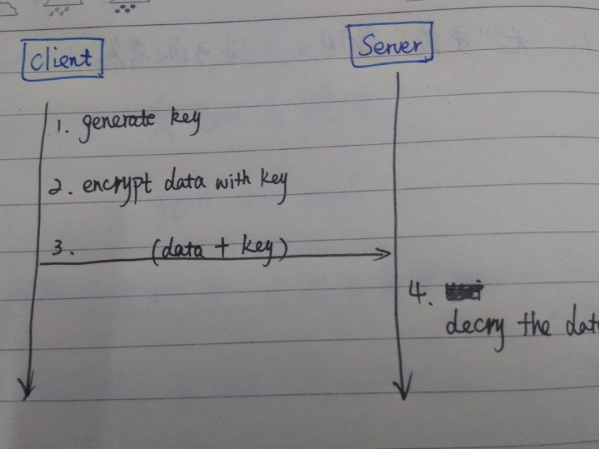
让我们想象这样一个场景：黑客拦截了这次通信，这意味着加密用的密钥和加密的数据都被盗取了。如果黑客有密钥，解密这段加密的数据就不是什么难事了。好了，你的数据泄露了。非对称加密（Asymmetric Cryptography）如何呢？
上一个方法一点也不安全，我们考虑下一个，非对称加密有怎么样呢？
这是一个很棒的想法。你使用服务器提供的公钥加密信息。因为服务器是唯一知道这个与公钥配对的私钥的，这意味着只有服务器能够解密这段加密的信息。这样，即使是黑客拦截了这段消息，它没有配对的私钥，也无法解密这段信息。因此，数据是安全的。
不足之处就是，非对称加密较对称加密来说，需要花费更长的时间来完成加解密的工作。出于用户体验的考虑，给一大串数据执行非对称加解密，并不是一个理想的方案。最终的方案
先前两个方案都失败了。有没有综合两个方案优势的方案呢？下面这个方案就是你需要的。
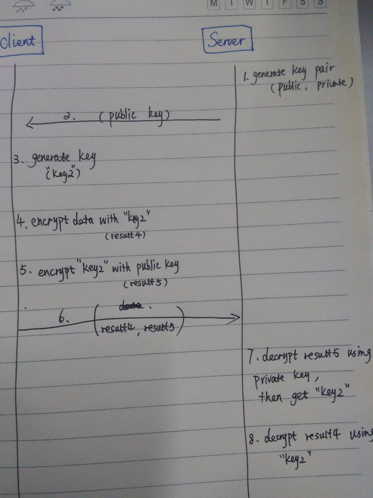
上图很清楚的展示了HTTPS的执行加解密的过程1. [server] 生成配对的公钥和私钥，我们称它为“Key”和“KeyPri”； 2. [server] 服务器将“KeyPub”传给客户端； 3. [Client] 生成对称秘钥("key2"),然后用key2加密信息； 4. [Client] 使用“KeyPub”加密“key2”。因为只有服务器知道“keyPri”,所以“key2”是安全的； 5. [Client]传递加密后的数据和加密的key给服务器； 6. [Server] 用“KeyPri”解密这个key，拿到“key2”； 7. [Server]用“key2”解密加密后的数据。数据安全的到达来了服务器（Now the data arrieve（？arrive） in Server safely）。
结论
因为对称加密比非对称加密快，因此HTTPS使用对称加密给数据加密，使用非对称加密加密对称加密生成的密钥，从而确保数据传输的安全性。使用这种方法，加密就变的即快速又安全了。
总之，理解HTTPS的工作原理是非常重要。这样在现实工作生活中就可以使用这种思想保证你的数据安全。
HTTP长连接/短连接
HTTP连接方式的进化史：
HTTP/0.9时代：短连接
每个HTTP请求都要经历一次DNS解析、三次握手、传输和四次挥手。反复创建和断开TCP连接的开销巨大，在现在看来，这种传输方式简直是糟糕透顶。
HTTP/1.0时代：持久连接概念提出
人们认识到短连接的弊端，提出了持久连接的概念，在HTTP/1.0中得到了初步的支持。
持久连接，即一个TCP连接服务多次请求：客户端在请求header中携带Connection: Keep-Alive，即是在向服务端请求持久连接。如果服务端接受持久连接，则会在响应header中同样携带Connection: Keep-Alive，这样客户端便会继续使用同一个TCP连接发送接下来的若干请求。
（Keep-Alive的默认参数是[timout=5, max=100]，即一个TCP连接可以服务至多5秒内的100次请求）当服务端主动切断一个持久连接时（或服务端不支持持久连接），则会在header中携带Connection: Close，要求客户端停止使用这一连接。
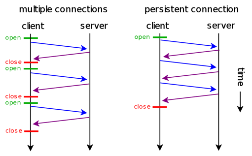
HTTP/1.1时代：持久连接成为默认的连接方式；提出pipelining概念
HTTP/1.1开始，即使请求header中没有携带Connection: Keep-Alive，传输也会默认以持久连接的方式进行。
目前所有的浏览器都默认请求持久连接，几乎所有的HTTP服务端也都默认开启对持久连接的支持，短连接正式成为过去式。（HTTP/1.1的发布时间是1997年，最后一次对协议的补充是在1999年，我们可以夸张地说：HTTP短连接这个概念已经过时了近20年了。）
同时，持久连接的弊端被提出 —— HOLB（Head of Line Blocking）即持久连接下一个连接中的请求仍然是串行的，如果某个请求出现网络阻塞等问题，会导致同一条连接上的后续请求被阻塞。
所以HTTP/1.1中提出了pipelining概念，即客户端可以在一个请求发送完成后不等待响应便直接发起第二个请求，服务端在返回响应时会按请求到达的顺序依次返回，这样就极大地降低了延迟。
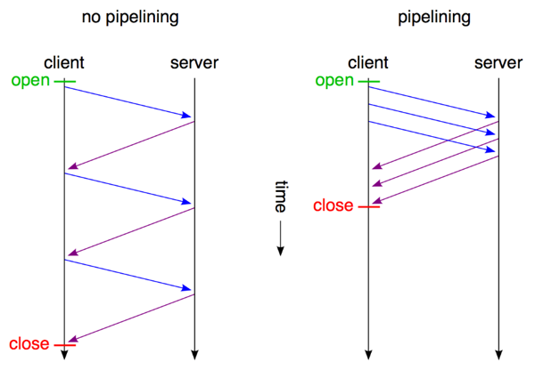
然而pipelining并没有彻底解决HOLB，为了让同一个连接中的多个响应能够和多个请求匹配上，响应仍然是按请求的顺序串行返回的。所以pipelining并没有被广泛接受，几乎所有代理服务都不支持pipelining，部分浏览器不支持pipelining，支持的大部分也会将其默认关闭。
SPDY和HTTP/2：multiplexing
multiplexing即多路复用，在SPDY中提出，同时也在HTTP/2中实现。multiplexing技术能够让多个请求和响应的传输完全混杂在一起进行，通过streamId来互相区别。这彻底解决了HOLB问题，同时还允许给每个请求设置优先级，服务端会先响应优先级高的请求。
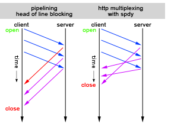
现在Chrome、FireFox、Opera、IE、Safari的最新版本都支持SPDY，Nginx/Apache HTTPD/Jetty/Tomcat等服务端也都提供了对SPDY的支持。
另外，谷歌已经关闭SPDY项目，正式为HTTP/2让路。可以认为SPDY是HTTP/2的前身和探路者。
SPDY（读作“SPeeDY”）是Google开发的
基于TCP的传输层协议，用以最小化网络延迟，提升网络速度，优化用户的网络使用体验。SPDY并不是一种用于替代HTTP的协议，而是对HTTP协议的增强。新协议的功能包括数据流的多路复用、请求优先级以及HTTP报头压缩。谷歌表示，引入SPDY协议后，在实验室测试中页面加载速度比原先快64%。